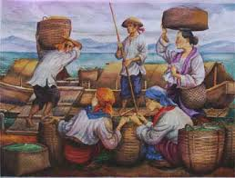

Ang sektor ng paglilingkod ang umaalalay sa buong yugto ng produksyon, distribusyon, kalakalan, at pagkonsumo ng mga produkto sa loob o labas ng bansa. Kilala rin ito bilang tersarya o ikatlong sektor ng ekonomiya matapos ang agrikultura at industriya.

Kalakalan - Pagpapalitan ng iba't ibang produkto at serbisyo.